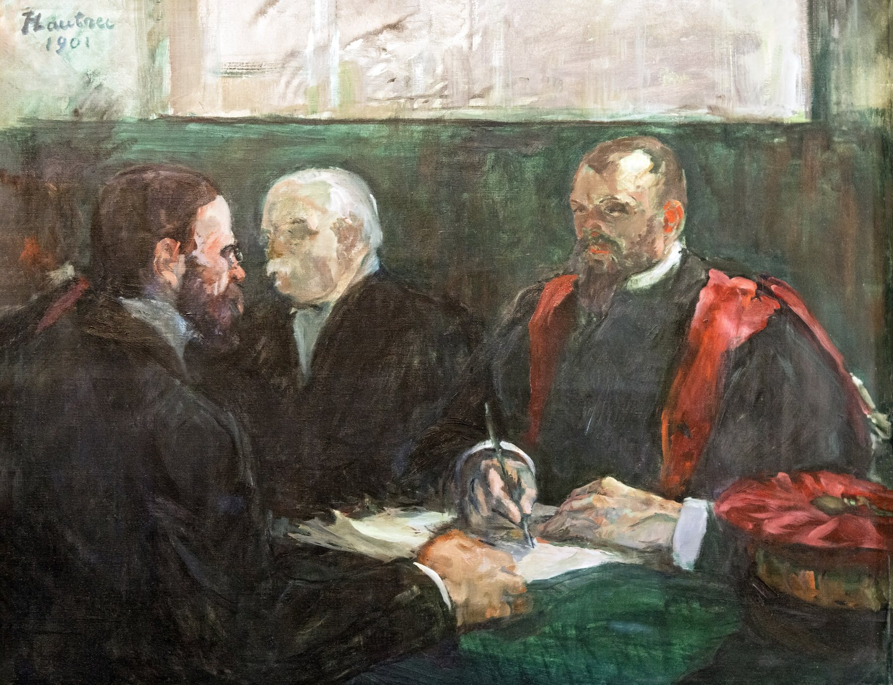
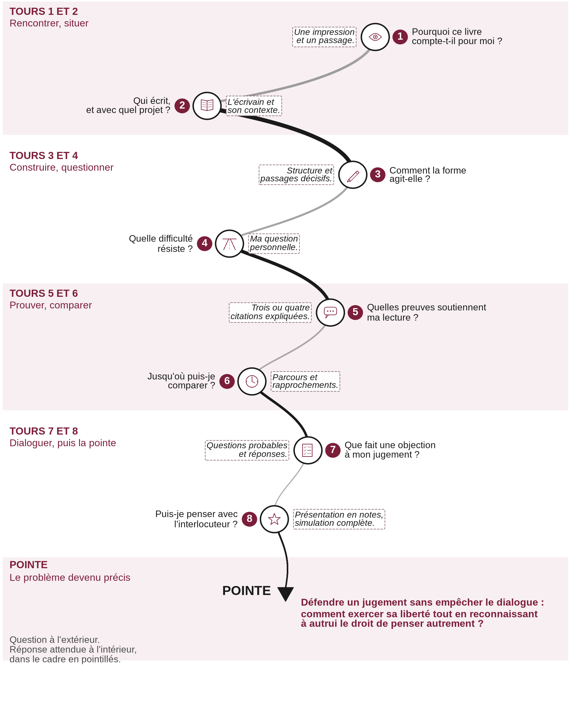

Lettres · Première · Lycée général et technologique
L’oral du bac de français : présenter une œuvre et dialoguer
Huit séances pour lire, expliquer, présenter une œuvre qui a compté et dialoguer avec l’examinateur, sans réciter.
Épreuve anticipée de français, épreuve orale : 30 minutes de préparation, 20 minutes de passage. Première partie : lecture, explication linéaire et question de grammaire, sur 12 points. Seconde partie : présentation de l’œuvre choisie, puis entretien, sur 8 points. La séquence s’appuie sur La Boétie, Discours de la servitude volontaire, et Nathalie Sarraute, Pour un oui ou pour un non, au programme 2026-2027 des voies générale et technologique.

Présentation
Huit séances de 55 minutes, prévues sur 52, avec à chaque fois un point d’arrêt, une sortie de secours, une trace écrite, un travail de langue corrigé et une prise de parole de chaque élève. La séquence se termine par un oral blanc complet.
Deux œuvres principales, communes aux deux voies :
- Étienne de La Boétie, Discours de la servitude volontaire : la littérature d’idées, et une enquête sur ce qui fait durer la domination.
- Nathalie Sarraute, Pour un oui ou pour un non : le théâtre, et une dispute née d’un presque rien. La pièce est lue dans l’édition de la classe.
Les oraux modèles sont écrits sous forme de dialogue, réplique après réplique, entre l’examinateur et l’élève. Ce sont des exemples pour s’inspirer, non des textes à apprendre par cœur. Une version guidée est proposée pour la voie technologique, avec les mêmes critères et le même barème.
L’examinateur : Le livre vous paraît-il accuser les dominés ?
L’élève : Il peut être lu comme une interpellation très forte. Mais je ne voudrais pas en faire un jugement simple contre les victimes. Je distingue la recherche des mécanismes qui soutiennent la domination et la désignation d’une culpabilité individuelle.
La fiche de correction réunit les corrigés des exercices de langue et des grilles d’oral blanc renseignées. On y suit le chemin complet : prestation, note, conseil, reprise.
La spirale de Gorse
Huit tours larges qui se resserrent progressivement : rencontrer et situer, construire et questionner, prouver et comparer, dialoguer. Le tracé s’achève par une pointe, non par un centre.

À la pointe. Défendre un jugement sans empêcher le dialogue.
Téléchargements
Cinq documents, chacun en PDF, Word et LibreOffice. Vous pouvez utiliser et adapter ces documents en citant leur autrice, sans usage commercial, et en partageant vos versions dans les mêmes conditions. CC BY-NC-SA 4.0.
-
Séquence (55 pages)
PDF Word (.docx) LibreOffice (.odt) -
Fiche professeur (5 pages)
PDF Word (.docx) LibreOffice (.odt) -
Fiche de correction et grilles renseignées (14 pages)
PDF Word (.docx) LibreOffice (.odt) -
Version dys (7 pages)
PDF Word (.docx) LibreOffice (.odt) -
Grille d’oral blanc, auto-évaluation et oral croisé (7 pages)
PDF Word (.docx) LibreOffice (.odt)
Pour l’écrit, voir aussi Dissertation et essai : les épreuves du bac en marche.
Conçu par Madame Carole Paoli Pompougnac
Henri de Toulouse-Lautrec, « Un examen à la faculté de médecine de Paris », 1901, huile sur toile, musée Toulouse-Lautrec, Albi, domaine public. Photographie : Didier Descouens, Wikimedia Commons, domaine public. Schéma de la spirale de Gorse : illustration originale, conçue par Madame Carole Paoli Pompougnac.
_Un_examen_%C3%A0_la_facult%C3%A9_de_M%C3%A9decine_de_Paris_-_Toulouse-Lautrec_1901_MTL.216.jpg){kind=link}